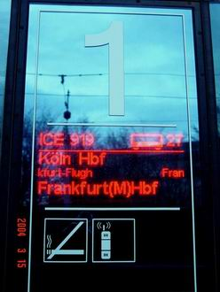

2004年3月15日德国Frankfurt City
3月14日下午两点零几分飞机起飞，从俄罗斯上空飞了几万公里，德国LUFTHANSA LH729航班。座无虚席，乘客里的中国人并不少，许多人听口音象是浙江那边的。座位扶手上提供AUDIO，有12个频道，耳机耳套在前排后袋里。大致以音乐风格区分频道，其中一个与飞机上电视节目的频道一致，还有一个中文音乐频道。
有人建议我在飞机上要穿拖鞋并带上保湿喷雾，在飞行的11个小时中，喷雾仅用了三次，而使用拖鞋却仍然需要一个环境，就象穿着再好的睡衣，你感觉再舒适，也不能穿着它外出或接待客人。（这里隐去若干尖酸刻薄的字节，大致与中国人在外形象的话题有关，说起来都是无奈。）
到达Frankfurt机场是当地时间3月14日的傍晚18：12分，19：02分乘出租车前往HOLIDAY INN酒店。Frankfurt是德国第五大城市，始建于公元794年，凡到德国旅游的人十有八九要到Frankfurt转机。因而，Frankfurt几乎成了德国的代名词。Frankfurt现在是德国商业及制造业的中心，也是重要的国际金融城市。
全球的汽车制造商都在使用Frankfurt泰维斯公司的无石棉闸瓦，威迪欧（VDO是世界汽车配件和汽车技术电子操纵控制仪表的第二大制造商）。驰名世界的欧宝总厂、大众汽车制造厂以及蒂森一亨歇尔工厂都与Frankfurt同在一个联邦州内。
“1749年8月28日中午，时钟敲了12下，我在美因河畔的法兰克福出生了”。这是歌德在他的自传《诗与真》中写下的第一句话。这座诞生了德国大文豪的建筑就坐落在法兰克福市中心的一条名叫大鹿坟的小街上。歌德的《少年维特的烦恼》中那个得不到回报的爱情故事，不知打动了多少人的心。
Frankfurt机场的候机楼A与铁路线相连，因此从Frankfurt中心到机场仅15分钟。在Frankfurt，旅客可乘坐德国国内铁路列车前往德国各地。

15日早晨3：30分左右醒来，接着睡，5点左右却又醒了。
酒店房间里没有香皂、牙刷、牙膏、拖鞋，提供吹风机、熨衣器、DOVE浴液、LUX洗发水、干净的毛巾。这里四处弥漫着DOVE用品的香味，我们都知道中国酒店提供的洗漱用品的质量，什么时候我们中国酒店里的洗漱用品能成为超市的大众商品，质量上一定是好许多了。
3月15日Cologne
早晨8：22分在酒店吃过早饭，打车前往FRANKFURT火车站，车费10欧元。高速列车班次为ICE 220。火车9：00出发，中间只停靠法兰克福机场站，10：15分准时到达COLOGNE。COLOGNE是欧洲著名的历史古城，已有2000多年的历史，COLOGNE亦是古龙水的(Eaude Cologne)的发祥地，Eau de Cologne的意思就是“科隆之水”，而世界有名的“4711”古龙水亦是原产于此。
与柏林功利主义色彩浓厚的建筑区，及清冷的窄巷和木质横梁的小城波恩中心相比，科隆（COLOGNE）是个活泼而富有朝气的城市，人口约100万。科隆不仅以双尖塔顶大教堂、四月斋前一日（MARDI GRAS）的盛大节庆以及宗教游行而闻名，更难能可贵的是，科隆（COLOGNE）在二战后从断垣残壁中重建的勇气。科隆人的精神还体现在大教堂（DOM）及塞佛林桥（SEVERINBRUCKE）的建设过程中，后者飞架莱茵河之上，仅以一根不居于桥中央的桥墩支撑整个桥身，起建筑结构独一无二蔚为奇观。
科隆是德国全国最大的金融中心。还以文化城市而著名。建于1338年的科隆大学，是欧洲最古老的高等学府之一。
 —Frankfurt火车总站（德语：Hauptbahnhof），是欧洲最繁忙的火车站，平均每天有1600辆火车从欧洲各地到达这里，每日客运量是255000人。搭乘ＩＣ特快列车可直达汉堡(Hamburg)、科隆(Koln)、慕尼黑(Munchen)等地。地下铁U-Bahn是法兰克福的新兴交通，与电车路线一样是用U1、U2表示。
—Frankfurt火车总站（德语：Hauptbahnhof），是欧洲最繁忙的火车站，平均每天有1600辆火车从欧洲各地到达这里，每日客运量是255000人。搭乘ＩＣ特快列车可直达汉堡(Hamburg)、科隆(Koln)、慕尼黑(Munchen)等地。地下铁U-Bahn是法兰克福的新兴交通，与电车路线一样是用U1、U2表示。
 —科隆大教堂
—科隆大教堂
星期一至日06：00-19：30/3，4，10月10：00-17：00/5-9月10：00-18：00
最有代表性的就是该城市的象征：科隆大教堂，每天有大批游客为了瞻仰大教堂而来到科隆。科隆大教堂勘称基督教世界中最伟大的哥特式教堂之一，位于在科隆火车站出站口，来往乘坐火车的游人可就近游览科隆大教堂，其市中心也与火车站连接在一起，很是方便。科隆大教堂收藏东方智者的遗物和史迪芬.罗赫纳（STEPHAN LOCHNER）的绘画作品等。教堂内巨大的空间和充满崇高期盼的气氛，令游客敬畏。高157米的教堂双尖塔顶始建于1248年，直到1842~1880年间才修建完工，当时正值建造纪念性建筑物蔚为时髦风尚时期。
科隆也有一些优秀的博物馆，其戏剧和音乐演出也颇为盛名。狂欢节期间，人们沉浸在热闹的节日气氛中，可杯畅饮当地出产的科尔什（KOLSCH）啤酒。

下午在火车站附近的市中心闲逛之后，返回火车站，火车站大厅内遍布“吃穿用”的商店、超市、咖啡馆...离开车时间尚早，于是我们在火车站内找了家名为CAFETIERO的小咖啡馆休息，看着匆匆忙忙过往的人群，等待18：49分的火车。这里四处弥漫着香水、咖啡的气味，德国女性大多中性打扮，常见女人们拎着比较男性化的公文包，戴着表面宽大的手表，穿着简洁大方，衣饰色彩素雅，多为纯色。是我两年前所崇尚的风格之一。德国女人的屁股普遍都很大。
3月16日最后半天停留在FRANKFURT
早晨，5点多钟再也睡不着了。于是起床完成每天下载照相机里的照片的工作、写出行记录，蓬头垢面的坐着忙碌到7点多钟。DAVID一个人去吃酒店的免费早餐，顺便再去寻找一下可以使用INTEENET的可能性。而我开始忙着洗澡，收拾行李。我们把行李寄存在前台，因为景点比较分散，而我们只有半天时间在Frankfurt，于是打车去市区闲逛。
那条商铺林立的街道，比COLOGNE的要宽敞许多，但都是些新型现代建筑。与COLOGNE相比自然少了许多古典浪漫的感受。逛完商业区，往相反的方向走时，正值城市到了午休时间，许多穿着西服的打着领带的职员在阳光下喝着咖啡吃着午餐。在古老的道路两边，别有一番味道。
 —Frankfurt倒头就睡的我
—Frankfurt倒头就睡的我
 —Frankfurt张贴海报的柱子
—Frankfurt张贴海报的柱子

 —Frankfurt午间休息晒太阳的市民
—Frankfurt午间休息晒太阳的市民
 —Cologne常见的NORDSEE快餐店，大多是鱼类食品。
—Cologne常见的NORDSEE快餐店，大多是鱼类食品。


—Cologne返回Frankfurt的火车上
No Responses to “德国行”
Leave A Reply
存档只读，评论已关闭。